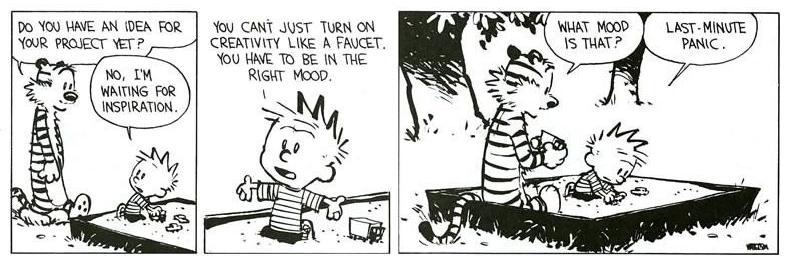

Getting started
It's been said a hundred times in a hundred ways by every blog everywhere, but I'll repeat it again: getting started is the hardest part.
 © Bill Waterson · The full strip · En Español
{kind=link}
This difficulty getting moving is universal and old as fuck. Three centuries ago Sir Isaac Newton described the phenomena in his first law of motion:
In every material universe, the motion of a particle in a preferential reference frame Φ is determined by the action of forces whose total vanished for all times when and only when the velocity of the particle is constant in Φ. That is, a particle initially at rest or in uniform motion in the preferential frame Φ continues in that state unless compelled by forces to change it.1
In other words:
An object that is at rest will stay at rest unless an external force acts upon it. 2
Why write this? Well frankly, getting this blog and (and site redesign) has been wicked hard and needed somewhere to start. Why not explore why getting going has been especially hard to actually do since started working in the 'real world.' The recipe for success was all there. I have more time than I did in college. I'm more skilled and have access to more talent and resources in DC than I ever did in Syracuse. Why so hard?
A few things, it's excuses and distractions. Common excuses include: I'm too tired/old/busy for this. Common distractions include: happy hours/ brunch/ girls/ facebook/ tumblr/ reddit/ ect. Additionally, making money has made it easier to push a personal site and personal work lower and lower in the list of priorities. Despite always having personal projects that were supplemental and nourishing in addition to my professional work, in some ways being financially comfortable removed the necessity for personal work and I became quickly complacent.
For us, the creators and the creatives, how can we introduce/find that "external force" that Newton describes? Simply put: actively seek out inspiration. Inspiration (like confidence) can manifest in many ways, but inspiration is often the nudge that gets the process going. Music, art, compatriots/ co-founders/ friends/ collaborators, deadlines are all forcing functions for inspiration. Later on in the strip above, Hobbes suggests that Calvin "try to not think about the end result too much and just have fun with the process of creating." That sounds pretty good too.
A few reminders to self when I need to get going: j.f.d.i., buddy up, push through the paradox of choice, and get some honest ego-busting advice.
Footnotes
1 — Beatty, Millard F. (2006). Principles of engineering mechanics Volume 2 of Principles of Engineering Mechanics: Dynamics-The Analysis of Motion,. Springer. p. 24. ISBN 0-387-23704-6.
2 — Newton's first law of motion. on wikipedia (yeah, I know.)